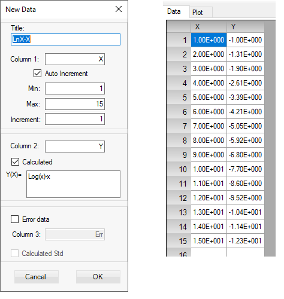
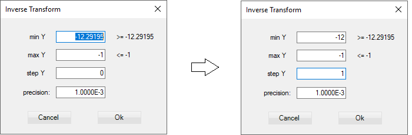
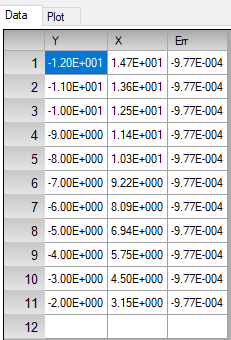

This function allows you to find and tabulate roots of an equation. Suppose you have an equation which does not have an analytical solution
and you want to find values of x(y). To do it first tabulate the values of y creating new data with calculated y values. From the menu choose Data > New (or press Ctrl+N keys).
Enter name, range for X like 1 – 15 with step 1, enter the math expression and click Ok. The data is calculated and shown in the table view.

Select Data > Inverse Transform from the menu or press Alt+I keys. The Inverse transform dialog is shown for Y range values. Set the step and change the range if needed but remaining within the initial range.

Set the precision and click Ok. The x values are calculated and new data is shown including precision for each value
